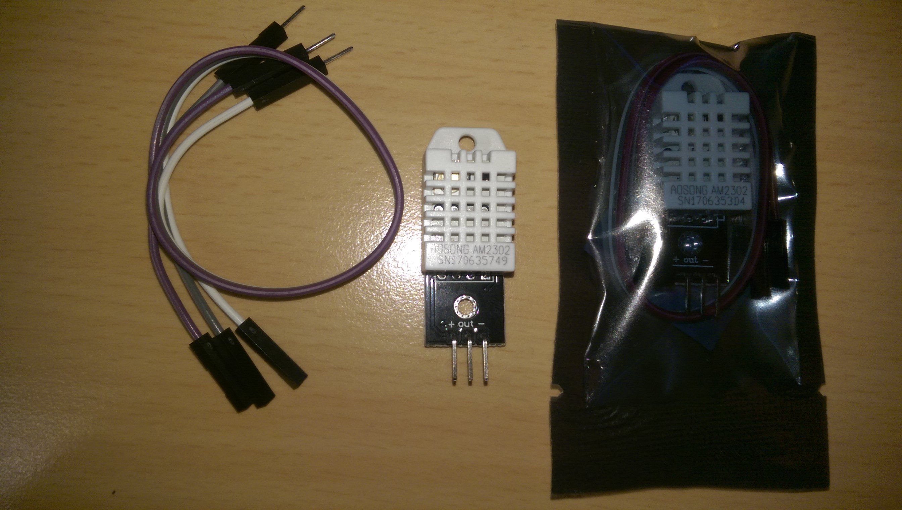
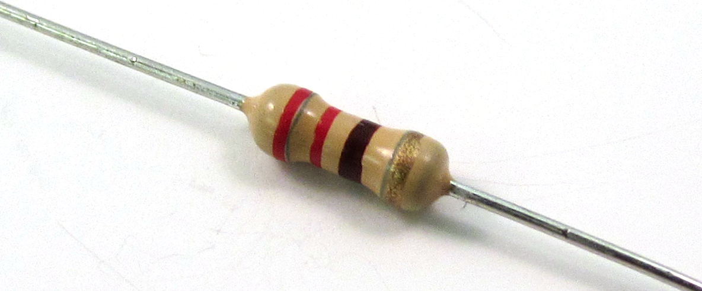
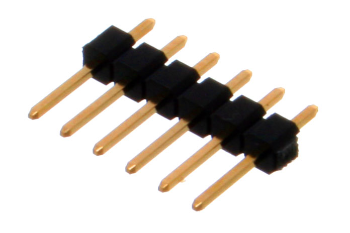

Pakke ut airbit delene
Det første du må gjøre er å pakke ut alle delene og identifisere dem. Bli kjent
med alle delene og sjekk at alle delene du trenger er i boksen.
Dersom du allerede kjenner til delene kan du forsikre deg at innholdet stemmer:
Sjekkliste
Boksen
Boksen består av 5 treplater og et lokk av gjennomsiktig akryl (pleksiglass).
Bunnplaten til boksen er den store rektangulære treplaten med avrundet topp.
Markeringer på platen viser hvor Arduino UNO kontrolleren og nova PM
sensor skal plasseres.
Alle fire sideplater er av tre. Skjekk nøye at du har én av hver, alle skal være
forskjellige.
Det er to lange og to korte sideplater.
- En lang sideplate skal vise logoene til
UiT og Skolelaboratoriet i realfag og teknologi,
og ha tre hull for sensoren for Temperatur og luftfuktighet, Micro SD
og luftutslippet for støvsensoren. - Den andre lange sideplaten skal vise logoene til air:bit og
Nordnorsk Vitensenter Tromsø og ha et hull for
luftinntaket for støvsensoren. - En kort sideplate skal ha to hull for USB og Strømtilkobling (7-12V).
- Den andre korte sideplates skal være helt blank.
{kind=link}
{kind=link}
{kind=link}
{kind=link}
Lokket til boksen er av gjennomsiktig akryl (pleksiglass). Den vil også ha
logoen til air:bit på toppen. Noen tidligere versjoner av
air:bit kan ha lokk uten logo, men vil ellers være helt lik.
Store deler
I air:bit pakken vil du finne en rekke sensorer og andre større komponenter,
noen av dem pakket inn i forseglete plastposer.
Arduino Uno
Mikrokontrolleren for air:bit er en helt vanlig Arduino UNO. Det er en stor
avlang rektangulær blå chip, med en rad av plugger på hver langsside. Den ser
omtrent ut som vist på bildet under.

Det følger også med en ledning for å koble Arduino'en til en datamaskin eller
til batteriet. Den ene enden av ledningen vil du gjenkjenne som en helt vanlig
USB-plugg, den andre enden vil være firkantet og passe i pluggen på Arduinoen
(USB-B).
Kretskort / Header Shield
air:bit kommer med et kretskort, vil kaller der header shield, som er designet
spesifikt for air:bit og sensorene som følger med. Det er en blå (eller grønn)
plate med masse hull og tekst på. Den vil se ut som vist i bildet under.

GPS modul
I en liten forseglet plastpose finner du GPS modulen. Den består av to deler:
- en kvadratisk tjukk blokk med en liten kort ledning som stikker ut.
Dette er GPS antenna, som mottar signaler fra GPS satelitter (akkurat som GPS)
på mobilen, o.l. - en liten blå chip, med modellnummeret
ublox NEO-6M-0-001printet på midten.

I bildet over, ser du GPS modulen både inni den originale posen og pakket ut.
micro SD kortleser
I en forseglet plastpose finner du en lang avlang rektangulær blå chip. På
baksiden står det microSD Card Adapter. Dette er kortleseren for
microSD-kortet hvor vi senere vil lagre måledata.
I tillegg til kortleseren vil du også finne et helt vanlig
Kingston 16GB microSD kort slik som du også ville brukt i digitalkameraer
eller mobiltelefoner, osv. Adapteren gir deg muligheten til å plugge inn
SD-kortet i en kortleser på PCen din. Nyere bærbare PCer har vanligvis
innebygde kortlesere. Når du plugger SD-kortet inn i PCen, vil den dukke opp
som en vanlig USB minnepinne og vise filene som ligger på den.
Støvsensoren
Den store blanke sensoren med en liten svart vifte på toppen og tekstennova PM sensor er sensoren som måler støvkonsentrasjon i luften.

I tillegg til selve sensoren, så følger det også med en ledning med hvite
endetupper og fire ledere. Ledningen er hvit med blå skrift.
DHT sensoren (Sukkerbiten)
Temperatursensoren er en firkantet hvit kloss som er loddet til en chip. På
grunn av formen kaller vi fra Skolelaben den også for "Sukkerbiten". Inni
posen er det også en ledning med tre (eller fire) ledere.

I bildet over, ser du DHT sensoren både inni den originale posen og pakket ut.
Batteriet
Batteriet er en Powerbank som kan lades opp med den lille hvit-oransje ledningen
som kan kobles i en datamaskin, eller en vanlig mobilladder (passer ikke for
Apple laddere, siden dem bruker en annen type ledning).

Smådeler
I en ZipLock-pose som følger med air:bit ligger det masse smådeler som skal
brukes for loddingen. Posen inneholder blant annet ti plastskruer med mutter,
to striper med dobbeltsidig teip (med forskjellig bredde) og to LED lyspærer av
forskjellig farge (én grønn og én blank som lye rødt). I tillegg vil du finne
delene som er forklart i det neste avsnittene.
Elektriske Motstandere
I posen ligger det også to 220 Ohms elektriske motstandere som ser slik ut:

Headerpinner
Posen inneholder to rader med tolv header-pinner hver.
Den ene raden har male pinner som ser slik ut:

Den andre raden har female pinner som ser slik ut:
Krympestrømpe
Krympestrømpe ser ut som et lite gummirør. Den skal hjelpe å holde på plass
ledningen til temperatur-sensoren, dersom den ikke skulle sitte godt nok fast.
For mange deler
Det kan hende at du vil finne flere deler enn det du trenger. Disse delene er
reservedeler i tilfelle noe går galt under loddingen.
Sjekkliste
Her er en liste over alle delene i boksen. Du vil også finne en slik liste inni
esken til air:bit.
- 1 Arduino Uno (Mikrokontrolleren)
- 1 air:bit header shield
- 1 U-blox NEO-6M GPS Module (GPS)
- 1 MicroSD Card Adapter (SD-kortleseren)
- 1 SDS011 nova PM sensor (Støvsensor viften)
- 1 AM2302 DHT sensor (Sukkerbiten)
- 1 Kingston 16GB microSD kort (Minnekortet)
- 1 Iiglo 3000 mAh Pocket Powerbank (Batteriet)
1 sett med bunnplate or fire forskjellige sideplater av tre og et lokk
av gjennomsiktig akryl1 oransj USB-strømkabel
- 1 Maxxtro USB2.0 USB-B datakabel (grå)
- 1 Flatkabel med fire ledere (til støvsensoren, hvit/blå)
- 1 ZipLock-pose med smådeler
- 10 stk 3mm plastskurer med mutter
- 2 std elektriske motstandere, 200 Ohm
- 2 stk LED lys 5mm
- 1 stk krypestrømpe
- 1 rad med 12 male header-pinner
- 1 rad med 12 female header-pinner
- 1 stripe bred dobbeltsidig teip (hvit)
- 1 stripe smal dobbeltsidig teip (rød)
Kontroller at esken inneholder alle delene som er listet opp her, dersom det
mangler deler, vennligs ta kontakt med oss ved å sende en mail til
skolelaboratoriet@nt.uit.no slik at vi
kan ettersende manglende deler.
Gå videre
↑ Gå til innholdsfortegnelsen
→ Gå til neste steg: Sette sammen casing
Mer informasjon
Du vil finne er mere detaljert beskrivelse samt linker til offisiell
dokumentasjon for alle komponentente under menypunktet
Komponenter.